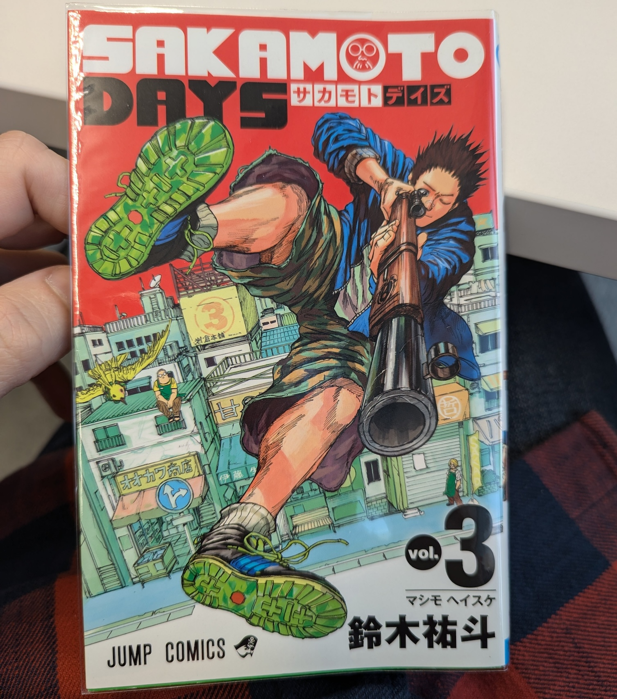

読書について
Sunday, 03 November 2024この週は風邪を引きました。先週末に喉が痛み始めて、火曜日からせきが出てきました。体が痛くなかったので、インフルエンザではなかったと思います。それで、この二つの週末、走れませんでした。今日から、元気が出てきました。
走ることをできませんでしたので、もっと読むの時間がありました。木曜日にハロウィンチャレンジの本を終わりました。本はグースバンプスの本です。タイトルは「わらう腹話術人形」です。去年は同じシリーズの本を読みました、けど本を終わるのが多い時間を掛かりました。この本を終わった時、とても気持ち良かった。
次の本はすでに読み始めています。タイトルは「ふしぎ駄菓子屋銭天堂、吉凶通り1」。この本は「ふしぎ駄菓子屋銭天堂」のシリーズの中で、第２１です。もう第一と第二を読みましたが、この本では新しいストーリーアークが始まりて、僕は読んでみたかった。
それに、漫画も読んでいます。最近スラムダンクを読み終わって、別のシリーズを始めました。タイトルは「サカモトデイズ」で、とても楽しいです。テーマは元暗殺者の坂本が他の暗殺者から家族と家族のコンビニを守らなければいけません。今日二冊目を終わって、三冊目を始めました。「スラムダンク」に比べて「サカモトデイズ」のほうが読みにくいが、もっと単語を覚えます。
明日は日本からたくさん引っ越しの箱を受けるはずで、家で忙しい週です。


